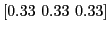

Next: Inputs with Multiple Faults
Up: PeMM Characterization
Previous: Targeting large logic blocks
Control flow handling for Logic block
The other factor contributes to the inaccuracy of PeMM estimation is the dynamic control flow within logic blocks. The runtime circuits masking capability shows significant difference compared with purely random characterization. This can be seen from the behavioral description of circuits shown in Figure 4, where a 3-to-1 multiplexer is generated during logic synthesis for the if/else statements. During execution, various active path shows different PeMM for the same logic block which leads to exclusive elements in PeMM. Random characterization results in a PeMM of

indicating error probability on each path is statically masked to 33%. To increase accuracy, additional helper_signal is adopted to indicate active path, which dynamically fill the elements in PeMM during execution. Such approach reviews trade-off between accuracy of characterization and modeling efforts.
Figure 4:
Control flow handling for PeMM
|
|
Zheng Wang A Chattopadhyay
2014-07-16